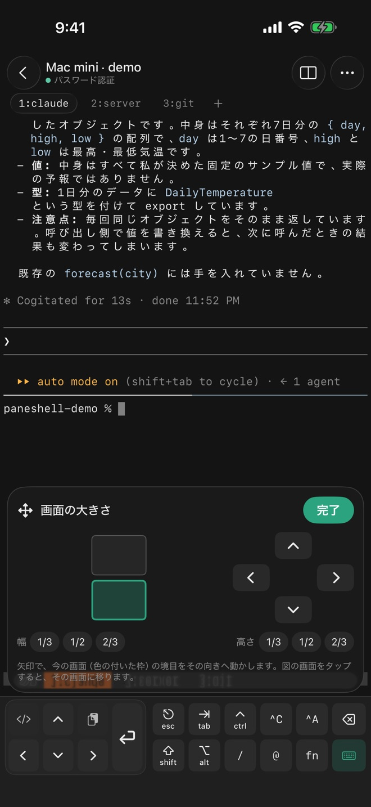
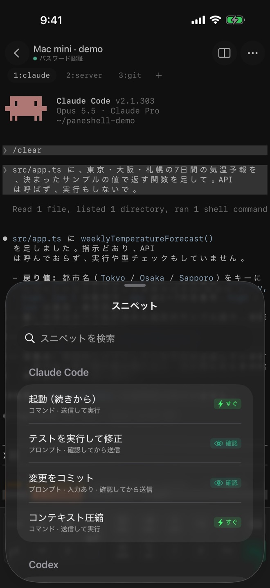
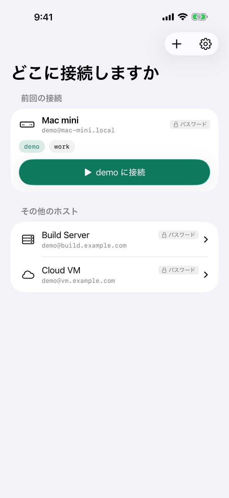

01 · tmux
離れても、作業はそのまま。
MacやLinuxにSSHで接続し、指定したtmuxセッションへ戻れます。ウインドウはタブで切り替え、ペインの分割やサイズの調整も画面から。通信が途切れても、接続先で動き続けている作業に再接続できます。

02 · 入力
スマホでも、指示を送りやすく。
Esc・Tab・Ctrl・矢印などは補助キーバーから。画面に重ねて使える浮かせるキーパッドもあります。よく使う指示やコマンドはスニペットに保存して、ワンタップで送信できます。

03 · 画面共有
Macの画面も、そのまま手元に。
macOS標準の「画面共有」にSSHトンネル経由で接続します。タップでクリック、ピンチで拡大、2本指でスクロール。トラックパッドのようにポインタを動かす方式にも切り替えられます。画面の通信に独自の中継サーバーは使いません。


画像を送る・開く
写真やファイルを接続先へ送信。AIが作った画像は、ターミナルに表示されたパスから開けます。

ホストを保存
公開鍵・パスワード認証に対応。Tailscale経由の接続も使えます。作業フォルダは接続先を見ながら選べます。
承認待ちを音で知らせる
Claude CodeやCodexの承認待ちや回答の完了を、音と振動でお知らせします（アプリを開いている間）。
テーマを選べる
見やすい標準テーマに加え、Pro ではClassicテーマも使えます。
iPadにも対応
大きな画面でペインを並べて作業できます。